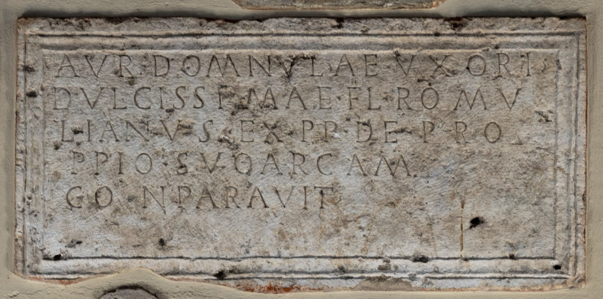

The Inscription of Domnula
PHYSICAL DESCRIPTION
- Type
- Frontal panel of the sarcophagus.
- Material(s)
- Limestone.
- Execution
- Inscribed.
- Dimensions
- 50 × 104 cm
- Epigraphic Field
- 38 × 92.5 cm
- Letters Height
- 4-5 cm
Palaeographic comment
Dextrograde direction, horizontal alignment, slightly vertical module, irregular ductus, triangular interpunction, left-aligned layout.
M composed of four oblique strokes.

INSCRIPTION
INTERPRETATIVE TRANSCRIPTION
Aur(eliae) Domnulae, uxori
dulcissimae. Fl(avius) Romu
=
lianus, ex p(rae)p(osito), de pro
=
p⸢r⸣io suo arcam
conparavit (!).
APPARATUS CRITICUS
3-4. PRO/PRIO, Bertolini 1875a,
CIL V 8662
.
5. COMPARAVIT, Bertolini 1875a,
CIL V 8662
.
TRANSLATION
To Aurelia Domnula, sweetest wife.
Flavius Romulianus, ex praepositus, commissioned the sarcophagus at his own expenses.
PEOPLE
Flavius Romulianus
- NOMEN
- Flavius
- COGNOMEN
- Romulianus
- GENS
- Flavia
- ORIGIN (of the name Romulianus)
- latin
- GENDER
- male
- OCCUPATION
- fabricensis
- RANK
- praepositus
- ROLE
- dedicator
- RELATIONSHIP
- husband (→ Aurelia Domnula)
Aurelia Domnula
- NOMEN
- Aurelia
- COGNOMEN
- Domnula
- ORIGIN (of the name Domnula)
- latin
- GENDER
- female
- OCCUPATION
- civilian
- ROLE
- deceased
- RELATIONSHIP
- wife (→ Flavius Romulianus)
Bibliography
| Bertolini 1875a, 116, n. 59. |
| Bertolini 1877, 41, n. 60. |
| CIL V 8662 |
| Bertolini 1982, 5. |
| ILCV 538 B |
| Lettich 1983, 47, n. 2. |
- EDR
-
EDR097751
- Author of the record:
- Damiana Baldassarra
- Date:
- 21-11-2007
COMMENTARY
Flavius Romulianus, formerly praepositus of the arrow factory at Concordia, commissions the sarcophagus for his wife Domnula.
Romulianus, as praepositus, was head of the arms factory. The same individual is mentioned in another inscription found in the Perulli estate where, again as dedicant, he commissions the burial for Tahetis and for himself. It is not the only attestation within the necropolis of a man who becomes a widower and remarries: one may think of the two inscriptions of Cocceius Ursus.
Bertolini believes that Domnula was the first wife of Romulianus, who would have remarried Tahetis and would have decided to be buried together with his second wife (Bertolini 1875a, 117; Bertolini 1877, 41). Indeed, Romulianus made explicit only in the burial of Tahetis his wish to be buried with his wife, a sign, according to Bertolini, that the fabricensis would not have felt the need to be buried with Domnula, because he was still fairly young. Bertolini writes "Questa Aur. Domnula sarebbe quindi, a nostro credere, la sua prima moglie, mancata a' vivi, quand'egli ancora nel vigor dell'età sentiva meno il bisogno di preparare a sé la tomba con essa" (Bertolini 1875a, 117).
By contrast, according to Lettich, Domnula would be the second wife of the fabricensis, since the inscription reads "ex praeposito", whereas in that of Tahetis Romulianus is described as praepositus without ex, thus showing the retirement of Romulianus (Lettich 1983, 46-47), a circumstance that hardly fits the "vigor dell'età" described by Bertolini.
The onomastics seem to suggest different social backgrounds for the two women: Tahetis displays a single-element onomastic formula, consisting only of a cognomen of clearly foreign origin. By contrast, the duo nomina Aurelia Domnula, of clearly Latin origin, indicate not only a probable local origin of the woman, but also her status as a free woman and perhaps ingenua, that is, a woman free from birth.
One could therefore conclude that the comminatory formula in the inscription of Tahetis not only indicates that this is the actual burial of Romulianus, who had an interest in protecting his own sarcophagus, but also represents a protection for Tahetis, of foreign or servile origin and without a gens of reference who could defend her. By contrast, Domnula was probably integrated into the social fabric of Concordia and would therefore have had relatives able to watch over her burial. There is evidence within the necropolis of individuals who look after the burials of their relatives, as in the case of Ennia Asteria, who restored her grandfather's sarcophagus. However, in this latter burial, the inscription recording the restoration also presents the typical comminatory formula, a sign that locals too feared tomb violators. Therefore, the absence of the pecuniary penalty in the burial of Domnula nonetheless remains an unknown that further complicates the understanding not only of the relationship between her, Romulianus and Tahetis, but also, more generally, of the widespread practice of the comminatory formula.